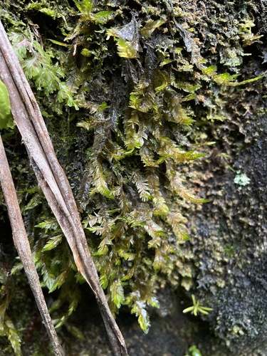

Phyllogoniaceae
Phyllogonium Moss Family
Phyllogoniaceae is a small but highly distinctive family of pleurocarpous mosses, instantly recognizable by their unique leaf arrangement. The leaves are strictly arranged in two opposite rows (distichous) along the stems, giving the plants a perfectly flattened, feather-like or braid-like appearance. They typically grow as long, pendent strands, hanging from tree branches and twigs (epiphytic) in humid tropical and subtropical forests.
Overview
The Phyllogoniaceae family is essentially monotypic, containing only the genus Phyllogonium with about 5-7 species. It belongs to the large order Hypnales. The family's distribution is pantropical and subtropical, occurring in the Neotropics, Africa, Madagascar, Southeast Asia, and Australasia, typically in cloud forests or other very humid environments.
The strictly distichous leaf arrangement is the most striking characteristic and makes the family easy to identify. The pendent stems hang vertically, often unbranched or sparsely branched, resembling flattened green ribbons or feathers. Leaves are typically broad, often asymmetric, lack a costa or have a very weak one, and are composed of smooth, linear cells. Sporophytes are rarely produced; when present, they are immersed among the perichaetial leaves on very short setae, with erect capsules and reduced peristomes.
Ecologically, Phyllogoniaceae are specialized epiphytes adapted to constantly humid conditions, often found hanging from twigs and small branches in the forest understory or canopy. Their unique morphology likely relates to maximizing light capture and water absorption/retention in these specific aerial microhabitats.
Quick Facts
- Scientific Name: Phyllogoniaceae
- Common Name: Phyllogonium Moss Family
- Number of Genera: 1 (Phyllogonium)
- Number of Species: Approximately 5-7
- Distribution: Pantropical and subtropical (Neotropics, Africa, SE Asia, Australasia).
- Evolutionary Group: Bryophytes - Mosses - Hypnales
Key Characteristics (Moss Morphology)
Gametophyte: Growth Form and Habit
Plants are pleurocarpous, forming long, slender, typically unbranched or sparsely branched pendent strands hanging from substrate. Primary stems are creeping and inconspicuous. Secondary stems are long, flaccid, and distinctly flattened due to leaf arrangement.
Gametophyte: Stems
Secondary stems are typically long and pendent. A central strand is usually absent.
Gametophyte: Leaves
Leaves are strictly distichous (arranged in two opposite ranks along the stem), often overlapping, creating a perfectly flattened appearance. Leaves are typically broad (oblong-ovate, lingulate), often asymmetric, with obtuse or rounded apices. Margins are usually entire or finely serrulate near the apex. A key feature is that the costa is absent, or very short and double, and weak. Leaf cells are typically long and narrow (linear), smooth, and often thick-walled.
Sporophyte: Seta, Capsule, and Peristome
Sporophytes are produced rarely. Sexual condition is dioicous or autoicous. The seta is very short. The capsule is consequently immersed among the enlarged perichaetial leaves, typically erect and symmetrical, ovoid or oblong. The operculum is usually rostrate (beaked). The peristome is double but typically highly reduced or rudimentary; exostome teeth may be short or irregular, and the endostome is often poorly developed or absent.
Field Identification (Mosses)
Identifying Phyllogoniaceae is straightforward due to its unique leaf arrangement and habit:
Primary Identification Features (Field/Hand Lens)
- Distichous Leaves: The absolute key feature – leaves arranged strictly in two opposite rows, making the stem look perfectly flat like a feather or braid.
- Pendent Habit: Plants form long, hanging strands from tree branches/twigs.
- Habitat: Epiphytic in humid tropical or subtropical forests (e.g., cloud forests).
- Lack of Costa: Leaves appear nerveless under a hand lens.
- Flattened Appearance: Shoots are distinctly flattened, not rounded or radially symmetric.
Secondary Identification Features (Microscope often needed)
- Costa Confirmation: Verify absence or very short/double nature of the costa.
- Cell Shape: Confirm long, linear, smooth laminal cells.
- Sporophyte Features: Immersed capsule on very short seta, reduced peristome (if found).
Common Confusion Points (Other Mosses)
- Fissidentaceae (Fissidens): Also have distichous leaves, but they are acrocarpous (or cladocarpous), typically grow on soil or rock (rarely pendent), and have a unique leaf structure with a vaginant lamina (sheathing flap). Sporophytes are different.
- Complanate Neckeraceae / Plagiotheciaceae: These families have flattened shoots, but the leaves are not strictly distichous; dorsal and ventral leaves are usually present, though smaller or appressed. They often possess a costa.
- Some Meteoriaceae / Lembophyllaceae: Can be pendent epiphytes, but leaves are arranged radially or spirally around the stem, not distichously.
Field Guide Quick Reference (Mosses)
Look For:
- Strictly distichous (2-ranked) leaves
- Perfectly flattened stems (like feather/braid)
- Long, pendent growth form
- Epiphytic habitat in humid tropics/subtropics
- Absence of leaf costa (or very faint)
Key Variations:
- Leaf shape details
- Plant length and robustness
- Presence/absence of rare sporophytes
Notable Genera
This family contains only one genus:

Phyllogonium
Phyllogonium Moss (Genus)
The sole genus of the family, defined by its strictly distichous leaf arrangement on long, pendent, typically unbranched stems. Leaves are broad, ecostate or nearly so, with linear cells. Sporophytes are rare, immersed, with reduced peristomes. Found in humid tropical/subtropical forests worldwide. P. viscosum is known for sometimes feeling sticky.
Phylogeny and Classification
Phyllogoniaceae is classified within the large pleurocarpous order Hypnales, class Bryopsida. Despite its highly distinctive morphology, particularly the distichous leaf arrangement (which is rare in Hypnales but common in the unrelated family Fissidentaceae), molecular data generally supports its placement within this order. Its exact relationships within Hypnales are somewhat uncertain, but it might be related to other pendent epiphytic lineages like Meteoriaceae or Neckeraceae.
The evolution of strictly distichous leaves in a pleurocarpous, pendent epiphyte is the most significant feature of this family. This morphology likely maximizes light interception and potentially water capture/retention in the specific microclimates where it thrives. The reduction of the sporophyte (immersed capsule, reduced peristome) is common among epiphytic mosses and may reflect adaptations for protection or dispersal in that environment.
Position in Plant Phylogeny
- Kingdom: Plantae
- Division: Bryophyta (Mosses)
- Class: Bryopsida
- Order: Hypnales
- Family: Phyllogoniaceae
Evolutionary Significance
The Phyllogoniaceae family is significant for:
- Unique Morphology within Hypnales: The evolution of strictly distichous leaves in this pleurocarpous lineage is highly unusual.
- Adaptation to Pendent Epiphytism: Represents an extreme specialization for hanging growth in humid tropical/subtropical environments.
- Convergent Evolution: Provides an example of distichous leaf arrangement evolving independently from the Fissidentaceae.
- Sporophyte Reduction: Shows a trend towards reduced sporophyte prominence common in some epiphytic groups.